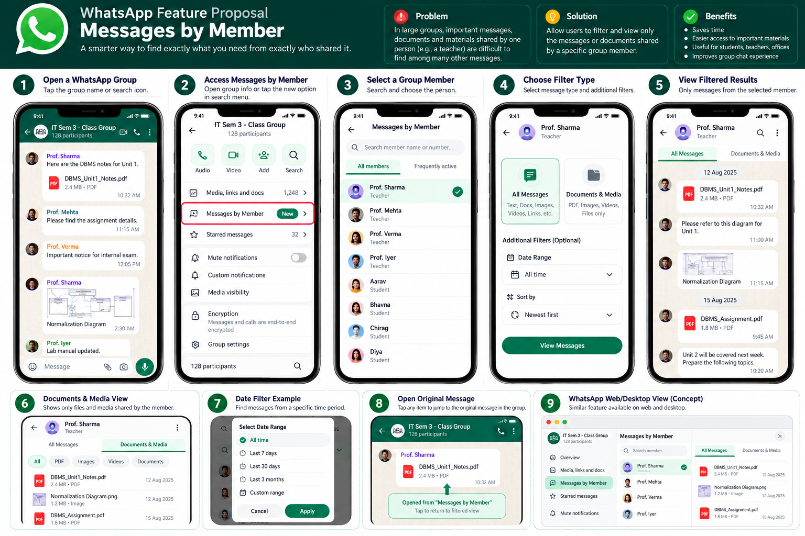

An independent WhatsApp feature proposal that makes large group conversations easier to navigate by filtering messages and media shared by a specific participant.

In college courses, school classes, professional workspaces, and community associations, dozens of participants actively share messages daily.
Consider a university semester group: several teachers send syllabus notes, assignment instructions, revision PDFs, and schedule updates. When a student needs only the DBMS notes shared by Prof. Sharma two weeks ago, finding them among hundreds of casual queries and other announcements is time-consuming and frustrating.
Keyword search requires remembering exact phrasing, while the shared media gallery lumps every file from all 120+ members together in one unsorted feed.
Endless scrolling through unrelated chat banter, fragmented keyword queries, and asking classmates or colleagues to re-share lost files.
Tap into Group Info, select the teacher or colleague, and immediately isolate all their shared messages or exclusively their PDF and media attachments in chronological order.
Engineered to fit seamlessly into WhatsApp's familiar design language without adding visual clutter.
Quickly locate any group member by contact name, role (e.g., Teacher/Student), or phone number using real-time search.
View a clean chronological feed containing all text remarks, documents, images, video clips, web links, and voice notes from the selected sender.
Filter strictly for attachments: PDF lecture notes, Word/Excel documents, spreadsheets, worksheets, presentation slides, and shared media.
Toggle sort orders seamlessly. Catch up on the latest announcements first, or reverse to trace an initial course syllabus chronologically.
Narrow results by time presets: "All Time", "Last 7 Days", "Last 30 Days", "Last 3 Months", or choose a custom calendar date range.
Tap any result to jump directly to the message's original location in the group chat, retaining timestamps and surrounding conversation context.
An intuitive flow that feels like a natural part of WhatsApp from the very first tap.
Open the target group chat and tap the group subject header or the in-chat search icon.
Tap the new Messages by Member option located right inside Group Info.
Search by name, role, or phone number and choose the participant whose items you need.
Select either All Messages or Documents & Media, and pick your sort order.
Browse the curated stream of messages and tap any item to jump straight into the chat timeline.
Explore the 9-part visual specification showing mobile screens, date picker modals, return banners, and desktop/web layouts.
These proposed design requirements outline how sender-based filtering should protect user privacy and respect WhatsApp's existing security architecture if implemented.
The proposed feature should not weaken or bypass WhatsApp's existing end-to-end encryption protections. Message contents must remain protected in transit and accessible only to authorized participants.
Where technically feasible, filtering should happen locally on messages already accessible to the user on their device, rather than querying external indexing infrastructure.
Search queries and sender-filter criteria should not be unnecessarily exposed to external services or servers. Group interaction data should remain private to the user.
Deleted messages ("Delete for Everyone"), disappearing messages, group membership boundaries, and access permissions should strictly follow WhatsApp's existing behavior.
Users should only be able to filter messages they are already authorized to access within active groups. The proposed feature must never expose private 1-on-1 chats, cross-group content, or bypass group membership restrictions.
This project is an independent concept proposal and interactive prototype. It is not an official WhatsApp feature and is not affiliated with, endorsed by, or connected to Meta or WhatsApp. The prototype uses fictional sample data and does not connect to WhatsApp or access real messages. These privacy and architectural points represent proposed design requirements, not verified implementation details or guarantees.
Read the formal proposal submitted to WhatsApp and explore technical specifications.
The formal 3-page proposal document detailing problem definition, use cases, and request.
View PDF Document ↗ MarkdownComprehensive background, architectural pillars, target demographics, and tech stack details.
Read Overview ↗ MarkdownExhaustive breakdown of entry points, dual filter modes, sorting logic, and WhatsApp Web concept.
Read Specs ↗ MarkdownProposed privacy principles, on-device data boundaries, and encryption considerations.
Read Privacy Doc ↗